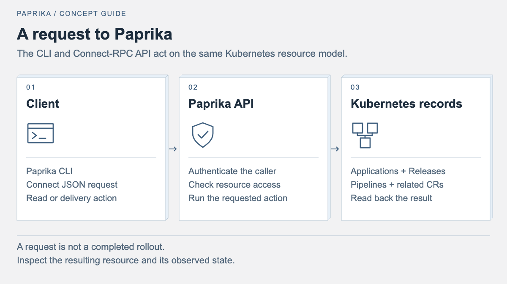

Paprika API reference
Explore Paprika's Connect-RPC API for applications, releases, pipelines and related resources, with request and response examples.
This page documents direct Connect JSON access and selected Paprika RPCs. The
full service definition is in proto/paprika/v1/api.proto.


For access from Codex or Claude, see the Paprika plugin guide.
The /mcp endpoint exposes authenticated tools for app health, debugging, and
delivery operations, with OAuth sign-in and the same application permissions as
the API. The guide covers installation, example prompts, and MCP Apps support.
A second, independent MCP surface lives at /observe/mcp (the observability
gateway). The paprika:observe scope allows authorized reads of logs, metrics,
traces, and Insights documents. Creating or editing saved queries and dashboards
additionally requires explicit paprika:insights:write consent and the caller's
Insights write permission. These document-authoring tools do not grant provider
configuration or fleet delivery writes.
See the observability gateway guide.
Direct Connect JSON requests
Unary RPCs are available at
/{package}.{service}/{method}. A direct JSON client must send both
Content-Type: application/json and Connect-Protocol-Version: 1.
When authentication is enabled, also send an Authorization header. For an
OIDC session this is Bearer <ID token>; HTTP Basic credentials are accepted
when Basic authentication is configured.
The examples below assume the server and a bearer token are already in shell variables. Keep tokens out of source files, logs, and shared shell history.
GetSystemStatus
Return one immutable, authorization-filtered application status snapshot. This
is the RPC used by paprika status.
Request
message GetSystemStatusRequest {
optional string namespace = 1;
uint32 attention_limit = 2;
}
Omit namespace to include every namespace the principal is allowed to read;
an explicitly empty namespace is invalid. attention_limit may be 0 through
100. Zero or omission uses the server default of 20.
Direct JSON example
curl --silent --show-error \
-H "Content-Type: application/json" \
-H "Connect-Protocol-Version: 1" \
-H "Authorization: Bearer ${PAPRIKA_TOKEN}" \
--data '{"namespace":"payments","attentionLimit":20}' \
"${PAPRIKA_SERVER}/paprika.v1.PaprikaService/GetSystemStatus"
To request all authorized namespaces and the server's default attention limit, send an empty JSON object:
curl --silent --show-error \
-H "Content-Type: application/json" \
-H "Connect-Protocol-Version: 1" \
-H "Authorization: Bearer ${PAPRIKA_TOKEN}" \
--data '{}' \
"${PAPRIKA_SERVER}/paprika.v1.PaprikaService/GetSystemStatus"
Response
message GetSystemStatusResponse {
uint64 index_generation = 1;
uint64 total = 2;
repeated FleetHealthBucket health = 3;
repeated FleetSyncBucket sync = 4;
uint64 attention_total = 5;
repeated ApplicationSummary attention = 6;
bool has_more_attention = 7;
}
total, every bucket count, attention_total, and the returned application
names are derived only from projects on which the authenticated principal may
read applications. Project authorization happens before aggregation, so an
unauthorized application cannot influence even anonymous-looking totals. If
the principal is authenticated but has no authorized projects, the RPC
succeeds with a zero-valued view. has_more_attention is true when
attention_total exceeds the number of returned attention records.
Connect's protobuf JSON encoding represents 64-bit integer values as JSON
strings and uses enum names such as FLEET_HEALTH_HEALTHY.
An absent, invalid, or expired credential returns Unauthenticated. Other
authorization failures return PermissionDenied; index startup or
unavailability returns Unavailable.
ApplyBundle
Submit a rendered manifest bundle to create or update an Application, Stage, Release, and manifest snapshot.
Request
message ApplyBundleRequest {
string namespace = 1; // Target namespace (required)
string name = 2; // Application name (required)
bytes manifests = 3; // YAML bundle
repeated string skip_policies = 4;
map<string, string> policy_overrides = 5; // policy name -> "enforce" | "warn"
bool dry_run = 6;
string project = 7; // AppProject name; defaults to "default"
}
Response
message ApplyBundleResponse {
Application application = 1;
Release release = 2;
repeated PolicyResult policy_results = 3;
bool blocked = 4;
string block_reason = 5;
}
Behavior
- The server ensures the target namespace exists.
- It parses the bundle, defaults missing namespaces, and injects
app.paprika.io/managed-byandapp.paprika.io/namelabels. - It resolves the
AppProject(defaultif empty) and validates project boundaries when governance is enabled. - It evaluates matching
PolicyCRDs, honoringskip_policiesandpolicy_overrides. - If any enforced policy fails, the response has
blocked: true,block_reasonis set, and no resources are created. - If
dry_runis true, the response contains the rendered Application/Release shapes and policy results but no resources are persisted. - Otherwise, the server creates or updates the
Application, creates aStagenamed{app}-default, creates a uniqueRelease, and stores the bundle in a snapshotConfigMapnamed{release}-manifests.
Policy result
message PolicyResult {
string name = 1;
string severity = 2; // "critical" | "warning"
string action = 3; // "enforce" | "warn"
bool passed = 4;
string message = 5;
}
Example curl-like request
curl -H "Content-Type: application/json" \
-H "Connect-Protocol-Version: 1" \
-H "Authorization: Bearer ${PAPRIKA_TOKEN}" \
--data '{
"namespace": "production",
"name": "payments-api",
"project": "payments",
"manifests": "YXBpVmVy...",
"skipPolicies": [],
"policyOverrides": {"require-labels": "warn"},
"dryRun": false
}' \
http://localhost:3000/paprika.v1.PaprikaService/ApplyBundle
Example response
{
"application": {
"name": "payments-api",
"namespace": "production",
"phase": "Promoting",
"project": "payments"
},
"release": {
"name": "payments-api-release-a1b2c3d4-1750000000",
"namespace": "production",
"phase": "Promoting",
"target": "payments-api-default"
},
"policyResults": [
{"name": "require-labels", "severity": "critical", "action": "enforce", "passed": true, "message": ""}
],
"blocked": false
}
RollbackRelease
Request that a release be rolled back to the previous viable snapshot.
Request
message RollbackReleaseRequest {
string namespace = 1;
string name = 2; // Release name
}
Response
message RollbackReleaseResponse {
Release release = 1;
}
Behavior
The server fetches the named Release, sets the annotation paprika.io/rollback-requested: "true", and ensures spec.onFailure.action is set to rollback. The release controller observes the annotation and applies the previous release's manifest snapshot. The response returns the updated Release with the new annotation.
Example curl-like request
curl -H "Content-Type: application/json" \
-H "Connect-Protocol-Version: 1" \
-H "Authorization: Bearer ${PAPRIKA_TOKEN}" \
--data '{
"namespace": "production",
"name": "payments-api-release-a1b2c3d4-1750000000"
}' \
http://localhost:3000/paprika.v1.PaprikaService/RollbackRelease
Example response
{
"release": {
"name": "payments-api-release-a1b2c3d4-1750000000",
"namespace": "production",
"phase": "Failed",
"rolledBackTo": "payments-api-release-z9y8x7w6-1749900000"
}
}